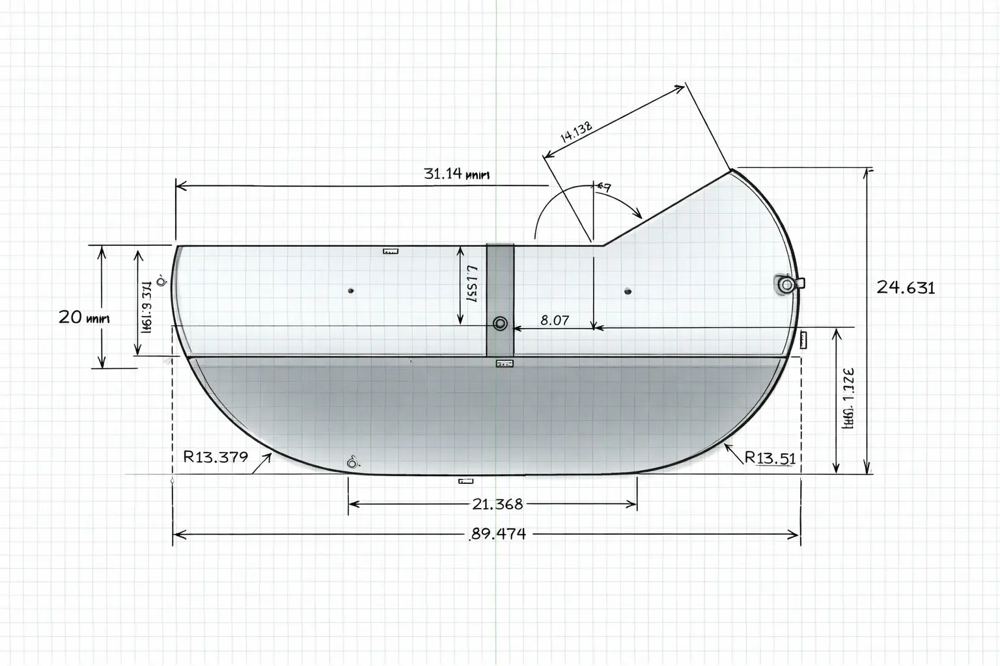

La experiencia que quiero explorar
La idea parte de una fricción personal: para interactuar con una IA desde el teléfono, muchas veces termino abriendo una aplicación y escribiendo en una pantalla pequeña. Me interesa explorar qué tareas podrían resolverse con una interacción más directa.
Digit plantea un dispositivo concebido alrededor de esa interacción. La pregunta es qué combinación de forma física, controles y respuestas tendría sentido para una situación de uso concreta.
Diseñar desde el uso
Una interfaz dedicada necesita justificar su lugar: qué tarea facilita, cuándo conviene usarla y cómo permite entender lo que está ocurriendo. La voz es una posibilidad a explorar junto con las señales visuales y los controles físicos.
El diseño también debe considerar qué ocurre cuando una instrucción se interpreta mal, cuánto tarda la respuesta y cómo se interrumpe o corrige una acción. Son preguntas de producto que orientan las decisiones de hardware y software.

Hardware, sistemas embebidos e IA
El interés técnico está en conectar el dispositivo físico con una experiencia de interacción con IA. Esa integración abre decisiones sobre entradas, salidas, conectividad y la distribución de funciones entre el dispositivo y los servicios con los que se comunica.
La arquitectura debe responder al uso elegido. La forma, los controles y el comportamiento del sistema se evalúan como partes de una misma experiencia.
Una hipótesis sobre nuevas interfaces
Me interesa la posibilidad de que distintas tareas encuentren lugar en dispositivos diferentes: algunos personales y otros integrados en los espacios donde trabajamos o vivimos. Digit es una forma de explorar esa idea desde un dispositivo de escritorio.
Es una hipótesis de diseño. Su valor dependerá de que una experiencia concreta resulte útil y de que pueda comprobarse con el desarrollo y las pruebas de uso.
Qué muestra este proyecto
Esta página reúne el planteo de la experiencia, una propuesta de diseño y un boceto del dispositivo. El repositorio del proyecto es el punto de acceso al material técnico compartido.
Las imágenes presentan la exploración de diseño; por sí solas no acreditan funcionalidades implementadas. Para evaluar la propuesta, habría que contrastar la interacción, los tiempos de respuesta y la utilidad en tareas definidas.
La pregunta de producto detrás de la tecnología
Explorar Digit permite mantener juntas dos preguntas: cómo construir una interfaz con IA y qué mejora aportaría a quien la usa. Ese vínculo entre experiencia, hardware y arquitectura es el centro del proyecto.
¿Estás explorando una nueva interfaz o dispositivo?
Podemos empezar por la situación de uso, la experiencia que querés mejorar y lo que necesitás validar.
Hablemos de tu proyecto